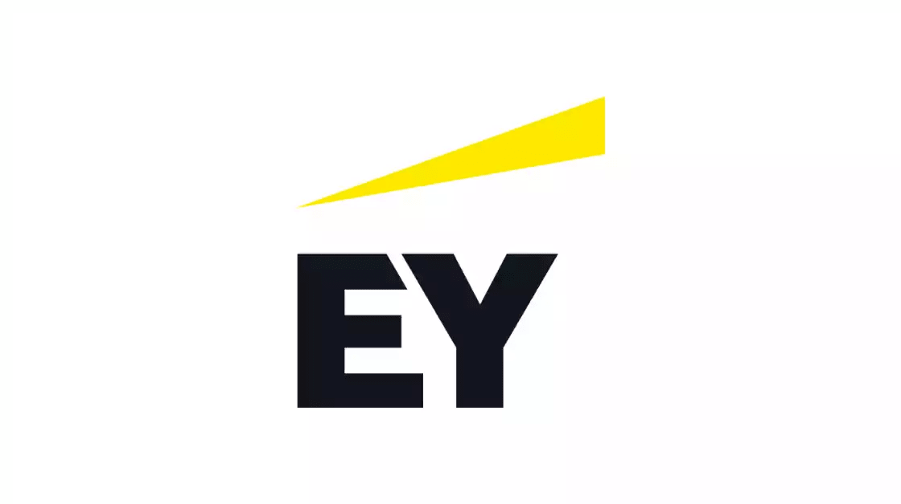

EY Recruitment 2022 | Associate Analyst | Gurgaon | Apply Now
EY Recruitment 2022
EY has announced a job notification for the post of Associate Analyst. A student from various disciplines can apply for EY Recruitment 2022. Interested and eligible candidates can read more details below for Careers, Recruitment, Eligibility, Requirements, Salary, Skills, etc

▪︎ Apply For ServiceNow Recruitment 2022
▪︎ Apply For Baker Hughes Recruitment 2022
▪︎ Apply For Larsen and Toubro Recruitment 2022
▪︎ Apply For Zoho Off Campus 2022
▪︎ Apply For Capgemini Recruitment 2022
▪︎ Apply For Wipro Off-campus Drive 2022
| EY Recruitment 2022 | |||
|---|---|---|---|
| 1 | Company name | EY | |
| 2 | Post Name | Associate Analyst | |
| 3 | Salary | 5 LPA | |
| 5 | Job Location | Gurgaon | |
| 6 | Batch | 2022/21/20/19/18/17 | |
EY Recruitment 2022 - Job Description:
▪︎ EY Recruitment 2022 is hiring candidates for the post of Associate Analyst
Apply For Microsoft Recruitment 2022
Apply For Goldman Sachs Summer
Apply For Accenture Recruitment 2022
Apply For TCS BPS Hiring
Job Responsibilities :
▪︎ Facilitates and drives the process to completion by following up on requests from Risk Management Consultants and assisting the client team
▪︎ Understands key requirements of firm and regulators’ RM rules and policies
▪︎ Performs initial review of submissions from client teams and evaluates completeness, accuracy and appropriateness of proposed transaction/requests.
▪︎ Acts as a liaison between the client teams, other members of the Risk Management team, and various functional areas within the firm
▪︎ Formulates answers to client questions
▪︎ Uses analytical and project management methodology and tools
▪︎ Learns the firm structure, business strategies, service lines, and people of the firm
▪︎ Builds a network of people within Risk Management and across the firm
▪︎ Plans and organizes own work and keeps others informed of status and activities
▪︎ Individual is expected to apply judgment to initial consultations and/or submission review and rapidly develop understanding of key requirements of firm and regulator’s RM rules and policies
▪︎ Individual will reference existing policies; however, due to frequency of unique situations will need to research issues and, through situation specific inquiries, propose solutions to issues
▪︎ Support the business with time-critical data analyses, insights and recommendations
▪︎ Create insightful, easy to understand visualizations that provide performance, trending and benchmarking analysis to meet business needs
▪︎ Simplify and automate reporting, audits, and other data-driven activities; build solutions to have maximum scale and self-service ability by partner
▪︎ Knowledge in Advance Excel with Formulas
▪︎ Apply a broad range of analytical approaches, from back-of-envelope approximations to what-if scenarios, to deep dives, uncovering patterns in order to identify trends and new opportunities
▪︎ Other Responsibilities / Supporting Actions
▪︎ Manages tasks and activities in a timely manner and is responsible for specific outcomes
▪︎ Learns the firm structure, business strategies, service lines, and people of the firm
▪︎ Builds a network of people within RMS and across the firm
▪︎ Plans and organizes own work and keeps others informed of status and activities
Eligibility Criteria :
▪︎ B.Tech / M.Tech/ MS degree in Computer Science or related quantitative field with min. 7/10 CGPA. A batch of 2024. (No backlogs)
Preferred skill :
▪︎ Strong verbal and written communication skills.
▪︎ Good analytical and logical reasoning skills.
▪︎ Basic knowledge of any scripting language.
▪︎ Kaggle’s score is a plus.
▪︎ Experience with R / Matlab / Scipy / Pandas / Weka, and scripting languages such as Perl, Python.
▪︎ Experience with Hadoop / Hbase / Pig or Mapreduce / Bigtable / AzureML a plus.
▪︎ Knowledge of C++, C#, and .NET is a plus.
▪︎ Apply For IREL Recruitment 2022
▪︎ Apply For Logitech Recruitment 2022
▪︎ Apply For Mahindra Off Campus Hiring 2022
▪︎ Apply For Cargill Off Campus Drive 2022
About EY Recruitment 2022
▪︎ EY Recruitment 2022 , you’ll have the chance to build a career as unique as you are, with the global scale, support, inclusive culture and technology to become the best version of you. And we’re counting on your unique voice and perspective to help EY become even better, too. Join us and build an exceptional experience for yourself, and a better working world for all
How to Apply for EY Recruitment 2022
▪︎ EY Recruitment 2022 , Interested and Eligible candidates can apply for this drive online by scrolling down and clicking on Apply HERE.
▪︎ Apply For ServiceNow Recruitment 2022
▪︎ Apply For Baker Hughes Recruitment 2022
▪︎ Apply For Larsen and Toubro Recruitment 2022
▪︎ Apply For Zoho Off Campus 2022
▪︎ Apply For Capgemini Recruitment 2022
▪︎ Apply For Wipro Off-campus Drive 2022
▪︎ Apply For Microsoft Recruitment 2022
▪︎ Apply For Goldman Sachs Summer
▪︎ Apply For Accenture Recruitment 2022
▪︎ Apply For TCS BPS Hiring
▪︎ Apply For IREL Recruitment 2022
▪︎ Apply For Logitech Recruitment 2022
▪︎ Apply For Mahindra Off Campus Hiring 2022
▪︎ Apply For Cargill Off Campus Drive 2022